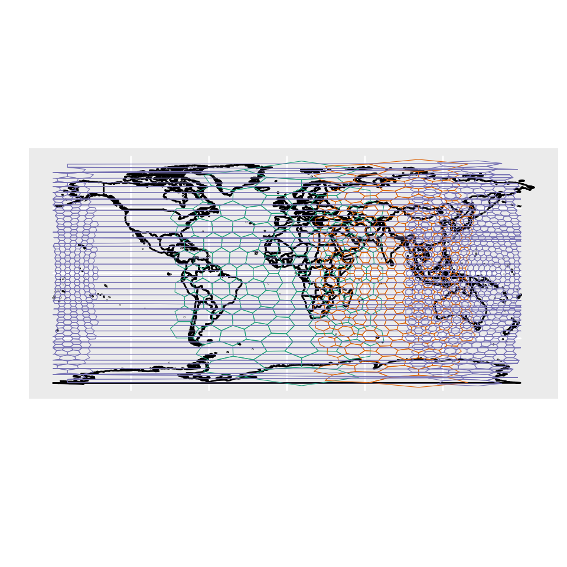
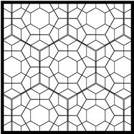
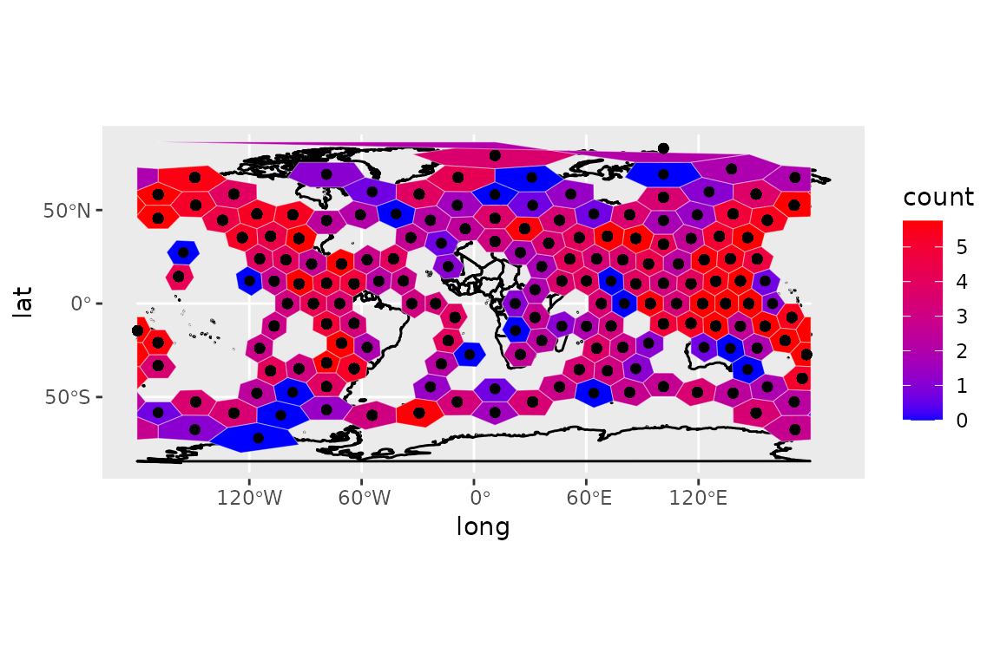
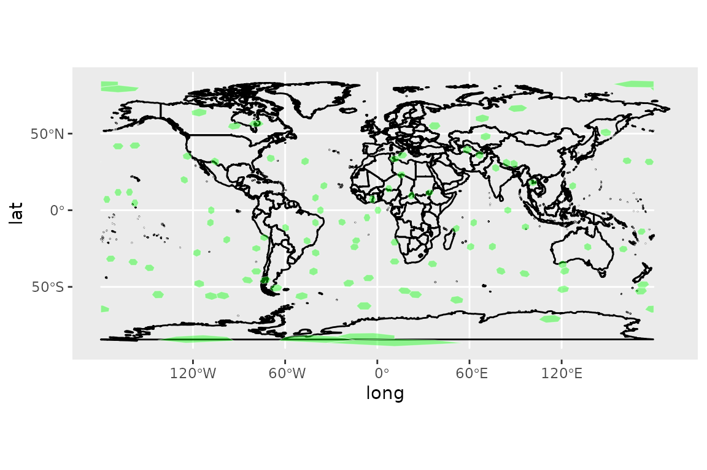
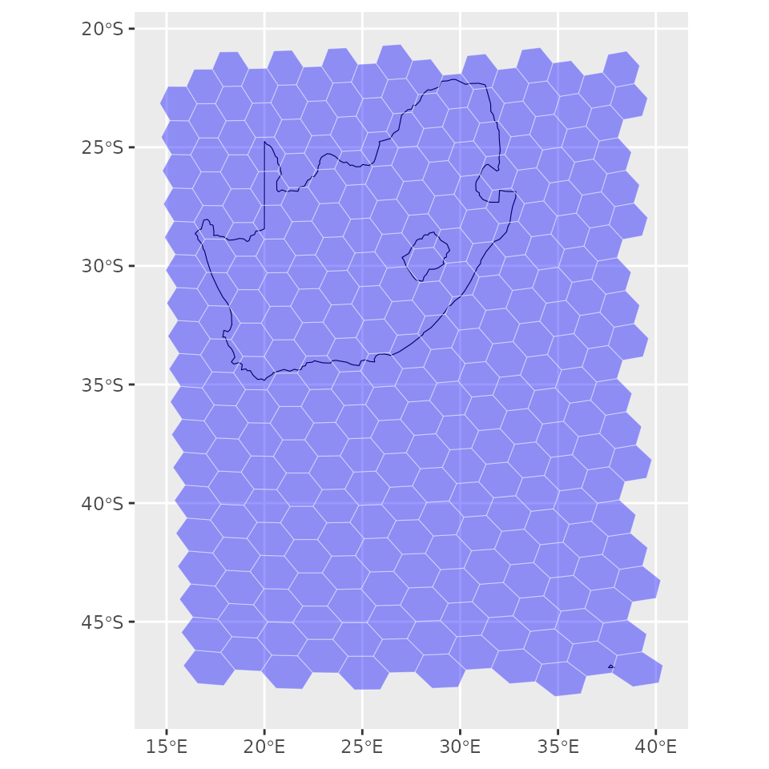
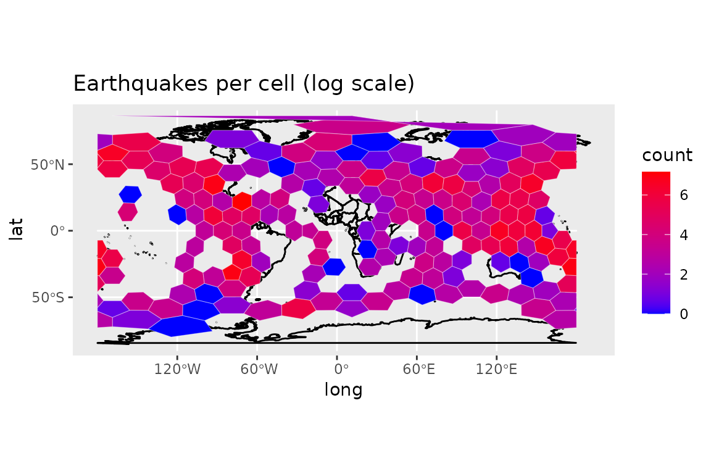
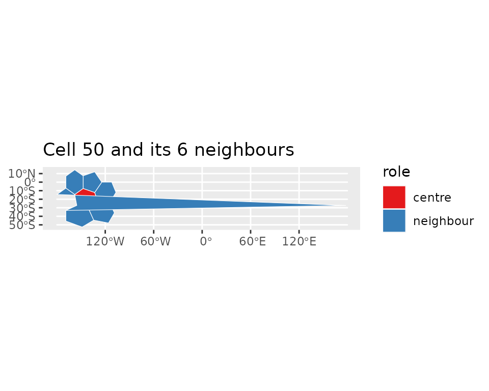
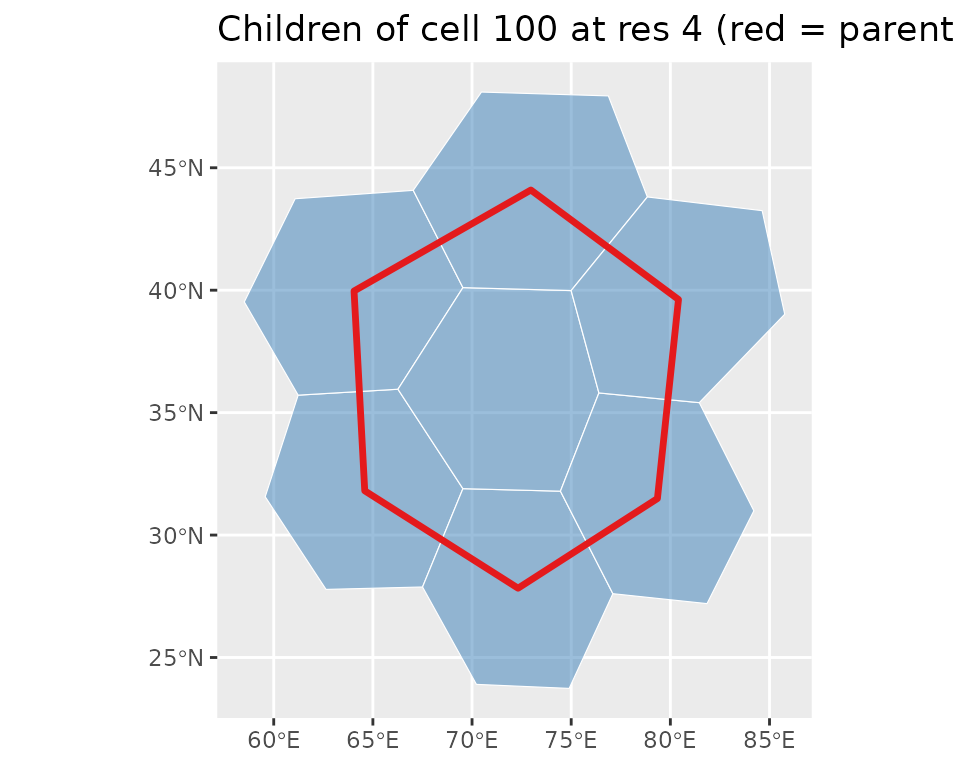
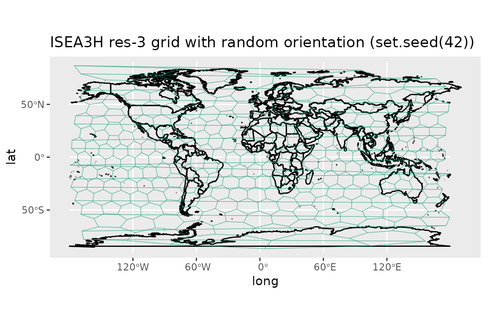
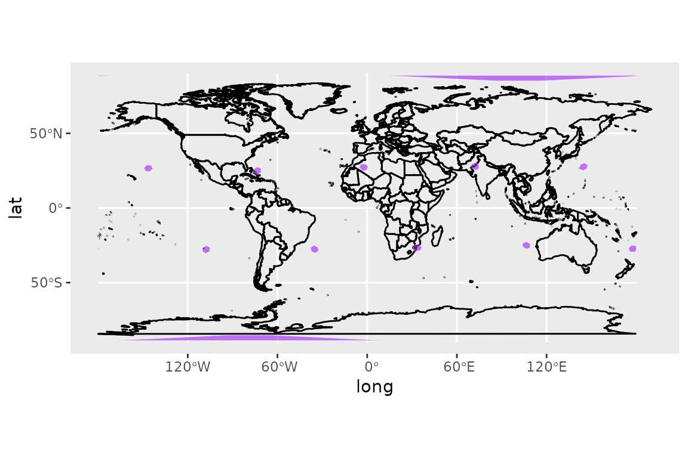

dggridR: Discrete Global Grids for R
Richard Barnes and Sebastian Krantz
2026-05-27
Source:vignettes/dggridR.Rmd
dggridR.Rmd
Spatial Analysis Done Right
You want to do spatial statistics, and it’s going to involve binning.
Binning with a rectangular grid introduces messy distortions. At the macro-scale using a rectangular grid does things like making Greenland bigger than the United States and Antarctica the largest continent.

But this kind of distortion is present no matter what the resolution is.
What you want are bins of equal size, regardless of where they are on the globe, regardless of their resolution.
dggridR solves this problem.
dggridR builds discrete global grids which partition the surface of the Earth into hexagonal, triangular, or diamond cells, all of which have the same size. (There are some minor details which are detailed in the Caveats section below.)

This package includes everything you need to make spatial binning great again.
Many details are included in the vignette.
Grids
The following grids are available:
- ISEA3H: Icosahedral Snyder Equal Area Aperture 3 Hexagonal Grid
- ISEA4H: Icosahedral Snyder Equal Area Aperture 4 Hexagonal Grid
- ISEA7H: Icosahedral Snyder Equal Area Aperture 7 Hexagonal Grid
- ISEA43H: Icosahedral Snyder Equal Area Mixed Aperture 4,3 Hexagonal Grid
- ISEA4T: Icosahedral Snyder Equal Area Aperture 4 Triangular Grid
- ISEA4D: Icosahedral Snyder Equal Area Aperture 4 Diamond Grid
- FULLER3H: Fuller Aperture 3 Hexagonal Grid
- FULLER4H: Fuller Aperture 4 Hexagonal Grid
- FULLER7H: Fuller Aperture 7 Hexagonal Grid
- FULLER43H: Fuller Mixed Aperture 4,3 Hexagonal Grid
- FULLER4T: Fuller Aperture 4 Triangular Grid
- FULLER4D: Fuller Aperture 4 Diamond Grid
Use the aperture argument of dgconstruct()
to select aperture 3, 4, or 7 for hexagonal grids. MIXED43 grids
alternate aperture-4 and aperture-3 refinements; construct them with
aperture_type = "MIXED43" and
num_aperture_4_res specifying how many resolution levels
use aperture-4 refinement.
Unless you are using cells with very large areas (significant fractions of Earth’s hemispheres), I recommend the ISEA3H be your default grid.
This grid, along with the other Icosahedral grids ensures that all cells are of equal area, with a notable exception. At every resolution, the Icosahedral grids contain 12 pentagonal cells which each have an area exactly 5/6 that of the hexagonal cells. But you don’t need to worry about this too much for two reasons. (1) As the table below shows, these cells are a small, small minority of the total number of cells. (2) The grids are orientated so that these cells are in out-of-the-way places. Future versions of this package will allow you to reorient the grids, if need be. (TODO)
For more complex applications than simple spatial binning, it is necessary to consider trade-offs between the different grids. Good references for understanding these include (Kimerling et al. 1999; Gregory et al. 2008).
Users attempting multi-scale analyses should be aware that in the hexagonal grids cells from one resolution level are partially contained by the cells of other levels.

Use dgchildren() and dgparent() to navigate
between resolution levels: dgchildren(dggs, cells) returns
the finer-resolution cells contained within each input cell, and
dgparent(dggs, cells) returns the coarser-resolution cell
that contains each input cell.
ISEA3H Details
The following table shows the number of cells, their area, and statistics regarding the spacing of their center nodes for the ISEA3H grid type.
| Res | Number of Cells | Cell Area (km^2) | Min | Max | Mean | Std |
|---|---|---|---|---|---|---|
| 0 | 12 | 51,006,562.17241 | ||||
| 1 | 32 | 17,002,187.39080 | 4,156.18000 | 4,649.10000 | 4,320.49000 | 233.01400 |
| 2 | 92 | 5,667,395.79693 | 2,324.81000 | 2,692.72000 | 2,539.69000 | 139.33400 |
| 3 | 272 | 1,889,131.93231 | 1,363.56000 | 1,652.27000 | 1,480.02000 | 89.39030 |
| 4 | 812 | 629,710.64410 | 756.96100 | 914.27200 | 855.41900 | 52.14810 |
| 5 | 2,432 | 209,903.54803 | 453.74800 | 559.23900 | 494.95900 | 29.81910 |
| 6 | 7,292 | 69,967.84934 | 248.80400 | 310.69300 | 285.65200 | 17.84470 |
| 7 | 21,872 | 23,322.61645 | 151.22100 | 187.55000 | 165.05800 | 9.98178 |
| 8 | 65,612 | 7,774.20548 | 82.31100 | 104.47000 | 95.26360 | 6.00035 |
| 9 | 196,832 | 2,591.40183 | 50.40600 | 63.00970 | 55.02260 | 3.33072 |
| 10 | 590,492 | 863.80061 | 27.33230 | 35.01970 | 31.75960 | 2.00618 |
| 11 | 1,771,472 | 287.93354 | 16.80190 | 21.09020 | 18.34100 | 1.11045 |
| 12 | 5,314,412 | 95.97785 | 9.09368 | 11.70610 | 10.58710 | 0.66942 |
| 13 | 15,943,232 | 31.99262 | 5.60065 | 7.04462 | 6.11367 | 0.37016 |
| 14 | 47,829,692 | 10.66421 | 3.02847 | 3.90742 | 3.52911 | 0.22322 |
| 15 | 143,489,072 | 3.55473 | 1.86688 | 2.35058 | 2.03789 | 0.12339 |
| 16 | 430,467,212 | 1.18491 | 1.00904 | 1.30335 | 1.17638 | 0.07442 |
| 17 | 1,291,401,632 | 0.39497 | 0.62229 | 0.78391 | 0.67930 | 0.04113 |
| 18 | 3,874,204,892 | 0.13166 | 0.33628 | 0.43459 | 0.39213 | 0.02481 |
| 19 | 11,622,614,672 | 0.04389 | 0.20743 | 0.26137 | 0.22643 | 0.01371 |
| 20 | 34,867,844,012 | 0.01463 | 0.11208 | 0.14489 | 0.13071 | 0.00827 |
How do I use it?
Construct a discrete global grid system (dggs) object using
dgconstruct()-
Get information about your dggs object using:
-
Get the grid cells of some lat-long points with:
dgGEO_to_SEQNUM()- One of many, many other such functions
-
Get the boundaries of the associated grid cells for use in plotting with:
-
Aggregate points directly into grid cells with:
-
dgpoints_to_cells()— returns an sf grid with optional per-cell counts -
dgbin_points()— returns a data frame with per-cell counts, means, or totals
-
-
Query spatial relationships between cells with:
-
dgneighbors()— adjacent cells (hexagonal grids only) -
dgchildren()— cells at the next finer resolution contained within each cell -
dgparent()— cell at the next coarser resolution that contains each cell
-
-
Check that your dggs object is valid (if you’ve mucked with it) using:
Examples
Binning Lat-Long Points
The following example demonstrates converting lat-long locations (the epicenters of earthquakes) to discrete global grid locations (cell numbers), binning based on these numbers, and plotting the result. Additionally, the example demonstrates how to get the center coordinates of the cells.
#Include libraries
library(dggridR)
library(collapse)
#Construct a global grid with cells approximately 1000 miles across
dggs <- dgconstruct(spacing=1000, metric=FALSE, resround='down')
#Load included test data set
data(dgquakes)
#Get the corresponding grid cells for each earthquake epicenter (lat-long pair)
dgquakes$cell <- dgGEO_to_SEQNUM(dggs,dgquakes$lon,dgquakes$lat)$seqnum
#Converting SEQNUM to GEO gives the center coordinates of the cells
cellcenters <- dgSEQNUM_to_GEO(dggs,dgquakes$cell)
#Get the number of earthquakes in each cell
quakecounts <- dgquakes |> fcount(cell, name = "count")
#Get the grid cell boundaries for cells which had quakes
grid <- dgcellstogrid(dggs,quakecounts$cell)
#Update the grid cells' properties to include the number of earthquakes
#in each cell
grid <- merge(grid,quakecounts,by.x="seqnum",by.y="cell")
#Make adjustments so the output is more visually interesting
grid$count <- log(grid$count)
cutoff <- fquantile(grid$count, 0.9)
grid <- grid |> fmutate(count = ifelse(count>cutoff,cutoff,count))
#Get polygons for each country of the world
countries <- map_data("world")Okay, let’s draw the plot. Notice how the hexagons appear to be all different sizes. Really, though, they’re not: that’s just the effect of trying to plot a sphere on a flat surface! And that’s what would happen to your data if you didn’t use this package :-)
#Plot everything on a flat map
# Handle cells that cross 180 degrees
wrapped_grid = st_wrap_dateline(grid, options = c("WRAPDATELINE=YES","DATELINEOFFSET=180"), quiet = TRUE)
ggplot() +
geom_polygon(data=countries, aes(x=long, y=lat, group=group), fill=NA, color="black") +
geom_sf (data=wrapped_grid, aes(fill=count), color=alpha("white", 0.4)) +
geom_point (aes(x=cellcenters$lon_deg, y=cellcenters$lat_deg)) +
scale_fill_gradient(low="blue", high="red")
You can also write out a KML file with your data included for displaying in, say, Google Earth:
library(sf)
#Get the grid cell boundaries for the whole Earth using this dggs in a form
#suitable for printing to a KML file
grid <- dgearthgrid(dggs)
#Update the grid cells' properties to include the number of earthquakes
#in each cell
grid$count <- merge(grid, quakecounts, by.x="seqnum", by.y="cell", all.x=TRUE)
#Write out the grid
st_write(grid, "quakes_per_cell.kml", layer="quakes", driver="KML")Randomly Sampling the Earth: Method 1
Say you want to sample N areas of equal size uniformly
distributed on the Earth. dggridR provides two possible ways to
accomplish this. The conceptually simplest is to choose N
uniformly distributed lat-long pairs and retrieve their associated grid
cells:
#Include libraries
library(dggridR)
N <- 100 #How many cells to sample
#Distribute the points uniformly on a sphere using equations from
#http://mathworld.wolfram.com/SpherePointPicking.html
u <- runif(N)
v <- runif(N)
theta <- 2*pi*u * 180/pi
phi <- acos(2*v-1) * 180/pi
lon <- theta-180
lat <- phi-90
df <- data.frame(lat=lat,lon=lon)
#Construct a global grid in which every hexagonal cell has an area of
#100,000 miles^2. You could, of course, choose a much smaller value, but these
#will show up when I map them later.
#Note: Cells can only have certain areas, the `dgconstruct()` function below
#will tell you which area is closest to the one you want. You can also round
#up or down.
#Note: 12 cells are actually pentagons with an area 5/6 that of the hexagons
#But, with millions and millions of hexes, you are unlikely to choose one
#Future versions of the package will make it easier to reject the pentagons
dggs <- dgconstruct(area=100000, metric=FALSE, resround='nearest')
#Get the corresponding grid cells for each randomly chosen lat-long
df$cell <- dgGEO_to_SEQNUM(dggs,df$lon,df$lat)$seqnum
#Get the hexes for each of these cells
gridfilename <- dgcellstogrid(dggs,df$cell)The resulting distribution of cells appears as follows:
#Get the grid in a more convenient format
grid <- dgcellstogrid(dggs,df$cell)
grid <- st_wrap_dateline(grid, options = c("WRAPDATELINE=YES","DATELINEOFFSET=180"), quiet = TRUE)
#Get polygons for each country of the world
countries <- map_data("world")
#Plot everything on a flat map
p <- ggplot() +
geom_polygon(data=countries, aes(x=long, y=lat, group=group), fill=NA, color="black") +
geom_sf(data=grid, fill=alpha("green", alpha=0.4), color=alpha("white", alpha=0.4))
p
Randomly Sampling the Earth: Method 2
Say you want to sample N areas of equal size uniformly
distributed on the Earth. dggridR provides two possible ways to
accomplish this. The easiest way to do this is to note that grid cells
are labeled from 1 to M, where M is the
largest cell id at the resolution in question. Therefore, we can sample
cell ids and generate a grid accordingly.
#Include libraries
library(dggridR)
N <- 100 #How many cells to sample
#Construct a global grid in which every hexagonal cell has an area of
#100,000 miles^2. You could, of course, choose a much smaller value, but these
#will show up when I map them later.
#Note: Cells can only have certain areas, the `dgconstruct()` function below
#will tell you which area is closest to the one you want. You can also round
#up or down.
#Note: 12 cells are actually pentagons with an area 5/6 that of the hexagons
#But, with millions and millions of hexes, you are unlikely to choose one
#Future versions of the package will make it easier to reject the pentagons
dggs <- dgconstruct(area=100000, metric=FALSE, resround='nearest')
maxcell <- dgmaxcell(dggs) #Get maximum cell id
cells <- sample(1:maxcell, N, replace=FALSE) #Choose random cells
grid <- dgcellstogrid(dggs,cells) #Get gridThe resulting distribution of cells appears as follows:
#Get the grid in a more convenient format
grid <- dgcellstogrid(dggs,df$cell)
grid <- st_wrap_dateline(grid, options = c("WRAPDATELINE=YES","DATELINEOFFSET=180"), quiet = TRUE)
#Get polygons for each country of the world
countries <- map_data("world")
#Plot everything on a flat map
p <- ggplot() +
geom_polygon(data=countries, aes(x=long, y=lat, group=group), fill=NA, color="black") +
geom_sf(data=grid, fill=alpha("green", 0.4), color=alpha("white", 0.4))
p
Save a grid for use in other software
Sometimes you want to use a grid in software other than R. To
facilitate this, the grid generation commands include the
savegrid argument, as demonstrated below.
library(dggridR)
#Generate a global grid whose cells are ~100,000 miles^2
dggs <- dgconstruct(area=100000, metric=FALSE, resround='nearest')
#Save the cells to a KML file for use in other software
gridfilename <- dgearthgrid(dggs,savegrid=tempfile())Get a grid that covers South Africa
library(dggridR)
#Generate a dggs specifying an intercell spacing of ~25 miles
dggs <- dgconstruct(spacing=100, metric=FALSE, resround='nearest')
#Read in the South Africa's borders from the shapefile
sa_border <- st_read(dg_shpfname_south_africa(), layer="ZAF_adm0")
st_crs(sa_border) = 4326
#Get a grid covering South Africa
sa_grid <- dgshptogrid(dggs, dg_shpfname_south_africa())
#Plot South Africa's borders and the associated grid
p <- ggplot() +
geom_sf(data=sa_border, fill=NA, color="black") +
geom_sf(data=sa_grid, fill=alpha("blue", 0.4), color=alpha("white", 0.4))
p
Point Aggregation
dgpoints_to_cells() maps a set of lon/lat points to
their grid cells and returns the grid geometry as an sf object,
optionally with a count column showing how many points fell
in each cell. dgbin_points() skips the geometry and returns
a plain data frame of per-cell statistics (count, mean, total).
library(dggridR)
data(dgquakes)
dggs <- dgconstruct(spacing = 1000, metric = FALSE, resround = 'down')
# One step: points → sf grid with per-cell counts
grid <- dgpoints_to_cells(dggs, dgquakes$lon, dgquakes$lat, return_count = TRUE)
grid$count <- log(grid$count)
countries <- map_data("world")
wrapped <- st_wrap_dateline(grid, options = c("WRAPDATELINE=YES","DATELINEOFFSET=180"), quiet = TRUE)
ggplot() +
geom_polygon(data=countries, aes(x=long, y=lat, group=group), fill=NA, color="black") +
geom_sf(data=wrapped, aes(fill=count), color=alpha("white", 0.4)) +
scale_fill_gradient(low="blue", high="red") +
ggtitle("Earthquakes per cell (log scale)")
dgbin_points() is useful when you only need the
aggregated numbers rather than the geometry:
bins <- dgbin_points(dggs, dgquakes$lon, dgquakes$lat, output_count = TRUE)
head(bins)## seqnum count
## 1 1 1
## 2 2 701
## 3 4 35
## 4 5 257
## 5 7 68
## 6 8 190Grid Neighbours
dgneighbors() returns the 6 adjacent cells for each
hexagonal cell (not supported for triangular grids).
library(dggridR)
dggs <- dgconstruct(res = 2, show_info = FALSE)
center_cell <- 30
nbrs <- dgneighbors(dggs, center_cell)
# Visualise the cell and its ring of neighbours
all_cells <- c(center_cell, nbrs$neighbor)
grid <- dgcellstogrid(dggs, all_cells)
grid$role <- ifelse(grid$seqnum == center_cell, "centre", "neighbour")
ggplot() +
geom_sf(data=grid, aes(fill=role), color="white") +
scale_fill_manual(values = c(centre = "#E41A1C", neighbour = "#377EB8")) +
ggtitle(paste("Cell", center_cell, "and its 6 neighbours"))
Parent and Child Cells
dgchildren() returns the cells at the next finer
resolution that are contained within each input cell.
dgparent() returns the coarser-resolution cell that
contains each input cell. Both require a hexagonal grid.
library(dggridR)
dggs_parent <- dgconstruct(res = 3, show_info = FALSE)
dggs_child <- dgconstruct(res = 4, show_info = FALSE)
parent_cell <- 100
chld <- dgchildren(dggs_parent, parent_cell)
# Visualise the parent boundary and its child cells
grid_parent <- dgcellstogrid(dggs_parent, parent_cell)
grid_child <- dgcellstogrid(dggs_child, chld$child)
ggplot() +
geom_sf(data=grid_child, fill=alpha("#377EB8", 0.5), color="white") +
geom_sf(data=grid_parent, fill=NA, color="#E41A1C", linewidth=1.2) +
ggtitle(paste("Children of cell", parent_cell, "at res 4 (red = parent boundary)"))
Round-tripping via dgparent() confirms that interior
children map back to their parent (boundary children may be shared with
a neighbouring cell):
## seqnum parent
## 1 297 100
## 2 306 106
## 3 307 111
## 4 298 111
## 5 288 97
## 6 287 100Densification
The densify parameter in dgearthgrid() and
dgcellstogrid() inserts additional interpolated vertices
along each cell edge. The default (densify=0) uses only the
corner vertices; higher values add intermediate points and produce
smoother curves when the cells are displayed in a curved projection.
library(dggridR)
dggs <- dgconstruct(res = 2, show_info = FALSE)
g0 <- dgearthgrid(dggs, densify = 0) # corners only
g5 <- dgearthgrid(dggs, densify = 5) # 5 extra vertices per edge
# Vertex counts increase substantially with densification
c(
sparse = sum(lengths(lapply(sf::st_geometry(g0), sf::st_coordinates))),
dense = sum(lengths(lapply(sf::st_geometry(g5), sf::st_coordinates)))
)## sparse dense
## 2528 13328Random Grid Orientation
By default the 12 pentagonal cells are placed at fixed,
out-of-the-way locations. Pass orient = "RANDOM" to
dgconstruct() for a uniformly random icosahedral
orientation, which is useful for sensitivity analyses or Monte Carlo
studies. Use set.seed() before the call for
reproducibility.
library(dggridR)
set.seed(42)
dggs_r <- dgconstruct(res = 3, orient = "RANDOM", show_info = FALSE)
gr <- dgearthgrid(dggs_r)
countries <- map_data("world")
ggplot() +
geom_polygon(data=countries, aes(x=long, y=lat, group=group), fill=NA, color="black") +
geom_sf(data=gr, fill=NA, color=alpha("#1B9E77", 0.5)) +
ggtitle("ISEA3H res-3 grid with random orientation (set.seed(42))")
Caveats
At every resolution, the Icosahedral grids contain 12 pentagonal cells which each have an area exactly 5/6 that of the hexagonal cells. In the standard orientation, these are located as follows (scaled to a size corresponding to the grid resolution):

Roadmap
- In the future, I plan to switch the package from using Kevin Sahr’s dggrid software to the discrete global grid system standards currently being developed by OpenGeospatial.
Credits
This R package was originally developed by Richard Barnes (https://richard.science/) and is currently maintained by Sebastian Krantz.
The dggrid conversion software was developed predominantly by Kevin Sahr (https://github.com/sahrk/DGGRID), with contributions from a few others.
Large portions of the above documentation are drawn from the DGGRID version 9.0b User Documentation, which is available at the DGGRID repository.
Disclaimer
This package should operate in the manner described here, in the package’s main documentation, and in Kevin Sahr’s dggrid documentation. Unfortunately, none of us are paid enough to make absolutely, doggone certain that that’s the case. Use at your own discretion. That said, if you find bugs or are seeking enhancements, we want to hear about them.
Citing this Package
Please cite this package as:
Richard Barnes, Kevin Sahr, and Sebastian Krantz (2026). dggridR: Discrete Global Grids for R. R package version 4.1.0. “https://github.com/r-barnes/dggridR/”